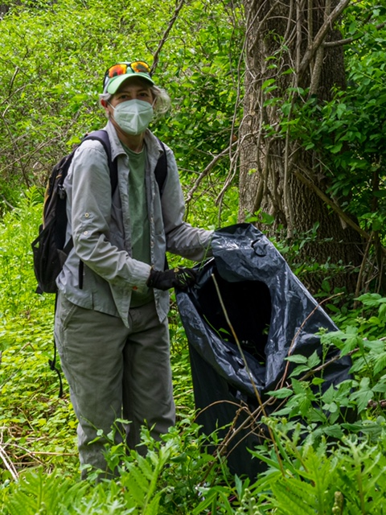
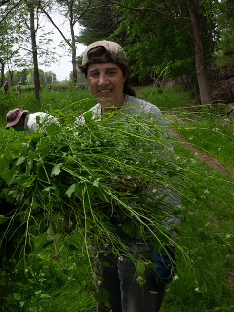
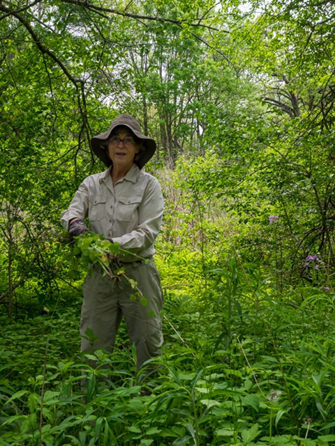
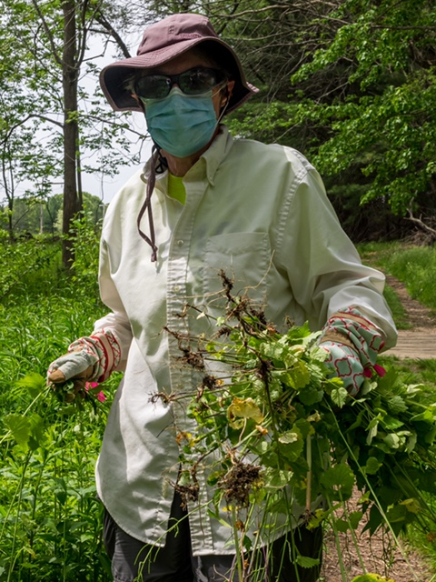
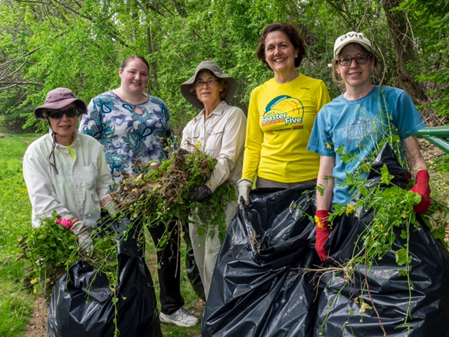

Garlic Mustard pulled by AVIS Weed Warriors on May 22, 2021, in the Shawsheen River Reservation.
Thank you to all those working on these invasive species at Lupine Reservation as well as
Shawsheen River Reservation





Here is a link to all AVIS reservations: link